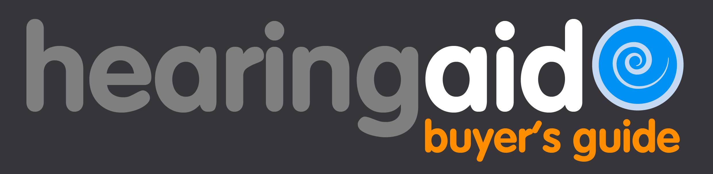

Hearing Aid Buyer's Guide
My process when designing for Hearing Aid Buyer's Guide. If you like what you see, let me know !
With Huston Hearing re-branding its entire image, it was also interested in creating other projects. Hearing Aid Buyer's Guide is one of those projects. I came in to translate that thinking into a design. Despite a massive amount of content for the user to see, I created a visual hierarchy that gives the sense of a wealth of content without being too overwhelming. Here are few of my favorite highlights from the process.
Home Page

This project is nearly finished and we are just waiting on the home page video to be done which was hired out to a third party.
The idea of the video is to introduce the user with a product and the video is designed to persuade them to move forward with seeing what the product has to offer.
The idea was to keep the home page simple and for all of the home page content to be seen above the fold and to act as a landing page.
This ensures that the user won't feel too overwhelmed, and if the user doesn't want to view the video, they can easily move forward to see what the product offers.
Product Page
This was the most important page, loaded with content. I wanted to create a hierarchy that was visually appealing so that the user would continue to scroll without needing to jump to another page to see more information.
Product Page Icons
I created flat, clean icons to visually show what kinds of information is included in the product. The use of icons was meant to help the user associate an image with what content they would receive.
Product Page continued
Also notice, throughout the page I wanted to have several call-to-action boxes for the user to be reminded to make a decision all along the way.
Hearing Aid Buyer's Guide Logo

I designed the Hearing Aid Buyer's Guide logo to appear friendly and professional, yet with the aspects to envoke the user to make a decision.
To do this I decided on a rounded font called VAG Rounded.
The next step was to apply the color palette. I chose orange and blue as the main colors because they are complementary colors and together are very dynamic. The idea was to envoke action and enthusiasm to the brand.
‘hearing’ is put in a grey to show contrast with the rest of the words of the logo, while 'aid,' 'buyers guide' and the logo icon are all bright and vibrant as if to move through the color spectrum. This was intentional due to the fact that we read from left to right and I wanted the user to end on "buyers guide."
The only background allowed for the logo to be placed on were charcoal and white. This was to keep simplicity and uniformity of brand design throughout.
I made the icon a circle with a spiral in the middle to mimic a sound wave going into the ear. The circular design was to give the user feelings of familiarity and safety, important factors when trying to guide the user to buy a product.